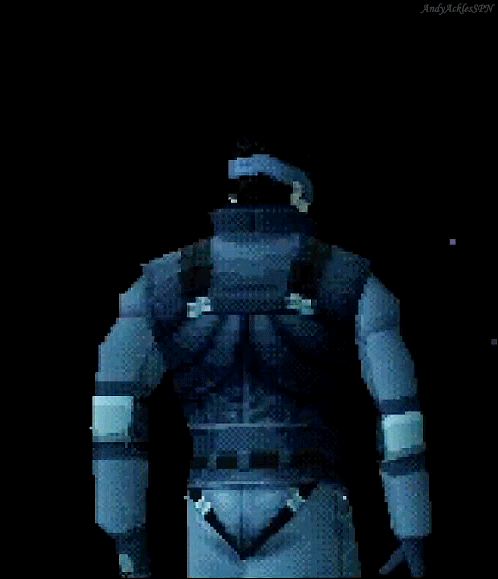

CSPT + Open Redirect = Account Takeover?
chaining cspt and open redirects to leak authentication tokens.
Just a web security researcher interested in web exploitation and finding weird bugs

chaining cspt and open redirects to leak authentication tokens.
A deep dive into frame-counting leaks and how they work internally in Chromium.